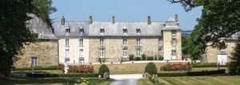
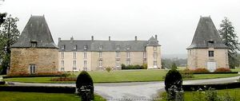
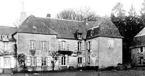

Recensement Jean-Claude Truffet
| Département | 35 — Ille-et-Vilaine |
| Canton | Bain de Bretagne |
| Commune | Bain de Bretagne |
| Type d'édifice | Château |
| Période d'origine | XV-XVI |
| Coordonnées GPS | 47° 50' 26" Nord, 1° 37' 31" Ouest |



Deux châteaux dans cet article, Robinais et Pomméniac. ROBINAIS, situé sur une des plus anciennes terres nobles de la commune de Bain-de-Bretagne, se présente comme un bâtiment composite, résultat d'au moins trois campagnes de construction. Du premier manoir, construit à l'époque médiévale, rien ne subsiste, excepté peut-être la porte en arc brisé de la cave. La tour d'escalier et les pavillons du logis remontent à la seconde moitié du XVIe siècle. Les deux pavillons situés au sud datent des années 1660, de même peut-être que la façade sud du logis. Toute la moitié ouest du château est une adjonction de la fin du XVIIIe siècle. De l'important ensemble de bâtiments fermés par une cour qui existaient au XVIIe siècle ne subsistent aujourd'hui que les pavillons, un peu défigurés, et le colombier transformé en chapelle. L'aspect de l'édifice trahit son histoire compliquée : si la façade sud conserve une harmonie assez classique, malgré la différence de rythme dans les travées perceptible entre la partie ouest et la partie est, le pignon Est et une partie de la façade nord conservant le témoignage de l'édifice antérieur. Le château de la Robinais est en définitive remarquable, moins par la qualité de son architecture, sobre et sans grande recherche, que par le témoignage qu'il porte sur l'évolution de cette architecture il se rattache à la fois à l'architecture manoriale de la seconde moitié du XVIe siècle (manoir de la Fresnais, manoir de la Noé en Ercé en Lamée) , et d'autres part aux grandes constructions des XVIIe et XVIIIe siècles. inscription au M.H. par arrêté du 23 décembre 1992. M. et Mme de Coniac.
POMMENIAC, le château de Pomméniac ou Pontméniac du XVII-XVIIIe siècle. Pomméniac est mentionné dès le XIe siècle. En 1427, l'Hostel de Pomménial est propriété d'Alain de Messac. Ce château reste la propriété de la famille Messac jusqu'au milieu du XVIe siècle. Il passe ensuite successivement entre les mains de Jean de Neufville (en 1559), Bernard de Manneville (en 1570), Jean du Fresne, seigneur de Saint-Gilles, Lézot (en 1692), Martel (en 1721), Caradeuc et Carron (en 1823), Jourdan (en 1836), marquis d'Andigné, Madame Texier de Cohignon. Le château brûle partiellement entre 1627 et 1634. Il possédait jadis un droit de haute justice et une fuie, et relevait de la seigneurie de Boeuvres, en Messac. On y trouvait autrefois une chapelle (XVIIème siècle) dédiée à Notre-Dame de Liesse et à Saint-Louis, édifiée par Roch Lézot gouverneur de Châteaubriand en 1598. En effet, au milieu du XVIIe siècle, Roch Lezot et Noëlle de la Corbinière, seigneur et dame de la Ville-Geffroy et de Pontméniac, firent construire près de leur manoir de Pontméniac une chapelle en l'honneur de Notre-Dame de Liesse et de saint Louis ; ils la firent desservir, mais ne la dotèrent point, de sorte que Mgr de la Vieuville la fit interdire. Ce que voyant, leur fille Claude Lezot y fonda une messe tous les dimanches et fêtes de l'année, et avec l'assentiment d'Eusèbe Lezot, seigneur de Vaurozé, son neveu, elle affecta au traitement du chapelain la métairie de la Follaye, en Bain-de-Bretagne. Cette fondation fut faite le 21 janvier 1678. Charles de Martel, seigneur de Pontméniac, présenta en 1766 Marc-François Michau d'Arbouville, clerc de Chartres, pour desservir la chapelle de Pontméniac, dont le titulaire, René Pelletier, venait de mourir (Pouillé de Rennes).
Robinais: M. et Mme de Coniac Pomméniac ; Famille Messac
"
Deux châteaux à Bain de Bretagne Robinais grav-1-2 et Pomméniac grav-3. GPS : 47° 50' 26" Nord, 1° 37' 31" Ouest